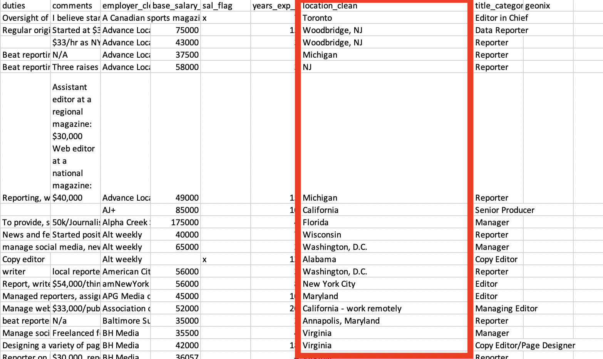
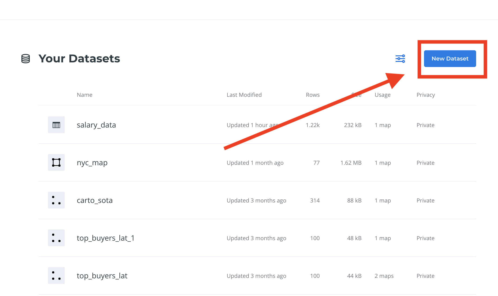
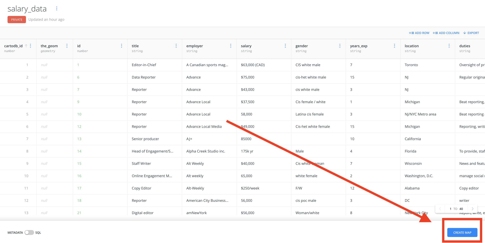
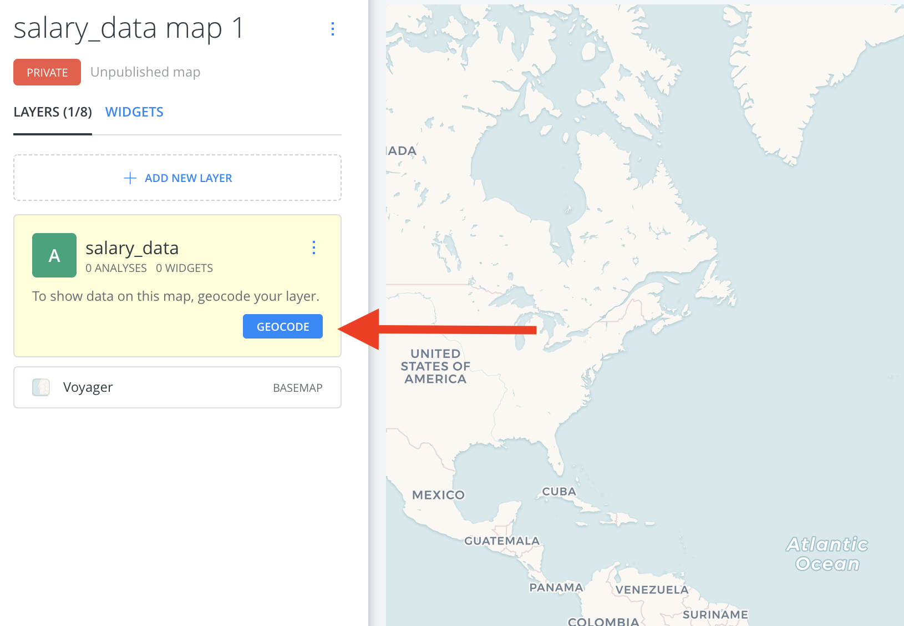
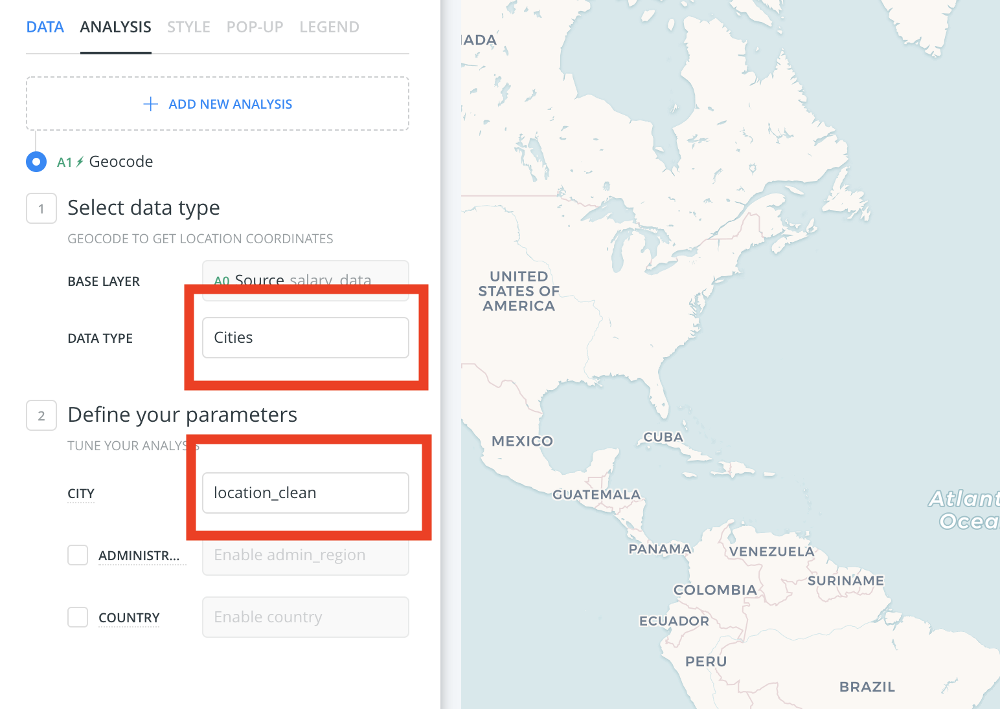
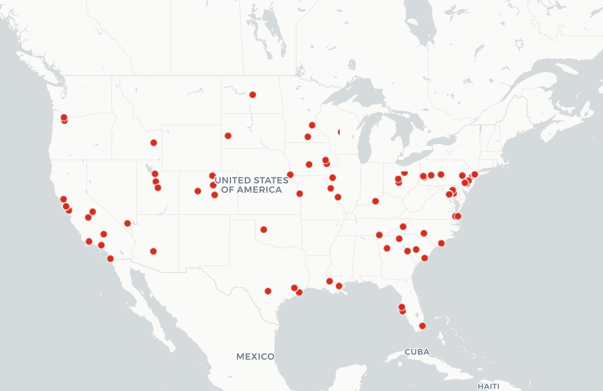

# Mapping tutorial
##### Using Carto to create a point map
------
<iframe src="http://s3.amazonaws.com/nj-data/essex-racial-dotmap/dotmap/Statewide1.html" width="100%" height="400" frameborder="0"></iframe>
## The data
First you'll need some data to make a map out of. For the purposes of this class, I've cleaned and formatted a portion of the popular "Real Journalism Salaries" spreadsheet.
### You can find it here: [salary-data.csv](assets/salary-data.csv)
This data has a number of columns, but most importantly for mapping purposes it has a location column. To save some time, I've cleaned it up a bit and created a new column called <b>location-clean</b>.

<br>
<br>
Ideally, you would have two columns that had <b>latitude and longitude</b>, the language that virtually all GIS programs speak in. But generally, that's not the case.
When all you have is an address or even a partial address, you need to <b>Geocode!</b>
There are a number of services that will do this for you.
- [Google](https://developers.google.com/maps/documentation/geocoding/start?utm_source=google&utm_medium=cpc&utm_campaign=FY18-Q2-global-demandgen-paidsearchonnetworkhouseads-cs-maps_contactsal_saf&utm_content=text-ad-none-none-DEV_c-CRE_315916117595-ADGP_Hybrid+%7C+AW+SEM+%7C+BKWS+~+Google+Maps+Geocoding+API-KWID_43700039136946117-kwd-300650646186-userloc_9003505&utm_term=KW_google%20geocoding%20api-ST_google+geocoding+api&gclid=Cj0KCQiAiNnuBRD3ARIsAM8KmlvXpJFqRkqvCy-X8DEdh4-3VznlX5IGKpGpg59OAO5_Cl2kAjUabtoaAjqvEALw_wcB)
- [Geocodio](https://www.geocod.io/)
- [Census Geocoding](https://geocoding.geo.census.gov/)
We'll be using the mapping service Carto's internal geocoding service.
Sign into your [Carto](www.carto.com) account.
If you scroll down on your dashboard, you should see <b>"Datasets"</b>
#### Click on "New Dataset"

<br>
<br>
Follow the prompts and upload your dataset to Carto.
#### Go back to your dashboard and open the file.
#### When you get to the data screen, click <b>create map</b> on the lower right corner.

<br>
<br>
#### This should open a blank map with a menu on the left side.
Carto does not know where to look for your location data, which is why it's blank.
#### Click the Geocode button.

<br>
<br>
#### Now we need to tell it where to look and what it's looking at.
#### In the Data type section, click "cities"
We don't have full address information, so cities is the best we can do.
#### In the "define your parameters" section, make the cities column "location_clean"

<br>
<br>
#### You should get a prompt that you have to use a certain number of your "credits"
You receive a set amount of geocodes before you have to pay Carto. This is true of most services.
#### Click confirm to start the process
#### ...
#### It'll take a minute.
#### ...
#### But then, you should have your first geocoded map!

<br>
<br>
### Hooray!
#### So we have a map. Now what?
<br>
# Now your professor ran out of time! This will be filled in soon.